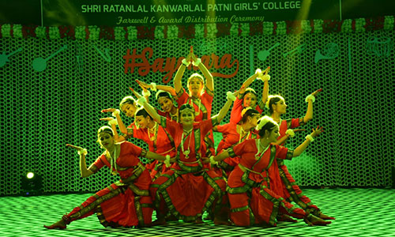
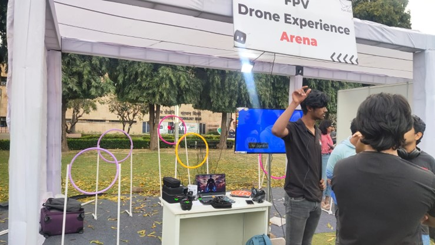

A Platform for Talent, Innovation, Culture, and Student Development
EXPLORE |
About the Annual College FestCelebrating Talent, Culture, Innovation, and Unity The Annual College Fest is one of the most awaited and celebrated events in the institution. It is organized every year with great enthusiasm, careful planning, and active participation from students, faculty members, and event coordinators. The fest serves as a platform where academic excellence meets creativity and culture. Students from different departments come together to celebrate diversity, showcase their talents, and exchange innovative ideas. The festive environment promotes friendship, teamwork, and a strong sense of belonging among students. Apart from entertainment, the fest also focuses on skill development, leadership, and personality growth. It provides students with real-life experience in event planning, coordination, and management. Objectives of the College Fest
Key Highlights of the Fest
Glimpses of Previous College FestsThe following images showcase memorable moments from previous college fests, highlighting student participation and the vibrant campus atmosphere.
  Student Participation and InvolvementStudents play a major role in the success of the college fest. From planning and promotion to execution and coordination, students actively contribute at every stage. Participation in the fest boosts confidence, improves communication skills, and helps students overcome stage fear while building leadership qualities. Importance of the College Fest
In conclusion, the Annual College Fest is not just an event but a celebration of talent, hard work, and student spirit. It plays a vital role in shaping confident, creative, and responsible individuals ready to face future challenges. |